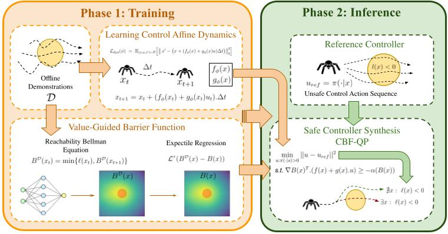
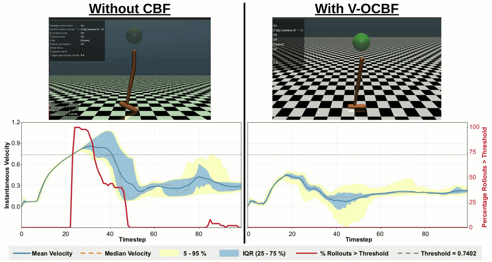

V-OCBF
Learning Safety Filters from Offline Data via Value-Guided Offline Control Barrier Functions
Learning Safety Filters from Offline Data via Value-Guided Offline Control Barrier Functions

Autonomous systems need controllers that keep the state out of a failure set $\mathcal{F} = \{x : \ell(x) > 0\}$ at every timestep — a state-wise hard constraint — while acting entirely from a fixed offline dataset of demonstrations, with no further online interaction with the environment.
Safe Offline RL enforces the wrong kind of constraint. Existing methods typically bound an expected, discounted cost, $\mathbb{E}[\sum_t \gamma^t c(x_t)] \le l$. Satisfying safety in expectation is not the same as never entering $\mathcal{F}$: a policy can hold the average low while still visiting unsafe states on individual trajectories.
Control Barrier Functions need what offline learning doesn't have. CBFs give a principled route to forward invariance, but classical constructions rely on an expert-designed candidate barrier and, to enforce the CBF condition at run time, on knowing the system dynamics — both of which are exactly what a purely offline, model-free setting withholds.
V-OCBF learns a neural CBF entirely from offline demonstrations, without assuming access to a dynamics model, by deriving a recursive finite-difference barrier update that propagates safety information backward through time — then uses that barrier inside a standard CBF-QP for real-time safe control.
A control-affine dynamics model $f_\phi, g_\phi$ is fit to offline transitions $(x, u, x') \sim \mathcal{D}$ by one-step prediction:
$$ \mathcal{L}_{\text{dyn}}(\phi) = \mathbb{E}_{(x,u,x')\sim\mathcal{D}} \Big[\big\|x' - \big(f_\phi(x) + g_\phi(x)u\big)\Delta t\big\|_2^2\Big], \qquad x_{t+1} = x_t + \big(f_\phi(x_t) + g_\phi(x_t)u_t\big)\Delta t. $$This gives the affine structure a CBF condition needs to act on, without ever assuming the true dynamics are known in closed form.
The barrier $B(x)$ is trained toward a reachability Bellman target that takes the running safety margin $\ell(x_t)$ whenever it exceeds what the future promises, and the (target-network) barrier value otherwise:
$$ B^{\mathcal{D}}(x_t) = \min\big\{\, \ell(x_t),\ B^{\mathcal{D}}(x_{t+1}) \,\big\}. $$Because this recursion looks one step ahead using only the data already in $\mathcal{D}$, it is a model-free finite-difference stand-in for the Hamilton–Jacobi safety value — no dynamics model is queried to compute the target itself.
Fitting $B(x)$ to $B^{\mathcal{D}}(x)$ by ordinary regression would implicitly require evaluating the barrier on actions the dataset never took. V-OCBF instead uses an expectile loss $\mathcal{L}^\tau\big(B^{\mathcal{D}}(x) - B(x)\big)$, which restricts the update to the dataset-supported action set and avoids querying the barrier on out-of-distribution actions — the same purely offline, in-sample principle that expectile-based methods use elsewhere in offline RL, applied here to a safety value instead of a reward value.
At deployment, a reference controller $u_{\text{ref}} = \pi(\cdot \mid x)$ may propose an unsafe action. The learned barrier and dynamics model are used to project it to the closest safe action by solving a small quadratic program at every control step:
$$ \min_{u:\ \pi(\cdot\mid x) > 0}\ \|u - u_{\text{ref}}\|^2 \qquad \text{s.t.}\quad \nabla B(x)^{\!\top}\big(f(x) + g(x)u\big) \ge -\alpha\big(B(x)\big). $$Because $f$, $g$, and $B$ are all learned from offline data, the entire safety filter — from barrier to safe control synthesis — is assembled without any online interaction or hand-engineered barrier function.

@article{tayal2026vocbf,
title={V-{OCBF}: Learning Safety Filters from Offline Data via Value-Guided Offline Control Barrier Functions},
author={Mumuksh Tayal and Manan Tayal and Aditya Singh and Shishir Kolathaya and Ravi Prakash},
journal={Transactions on Machine Learning Research},
issn={2835-8856},
year={2026},
url={https://openreview.net/forum?id=PGO9mpIyyb},
}